Seaborn gives statistics
a visual vocabulary.
Seaborn is narrower than Matplotlib by design. It concentrates on high-level statistical graphics: relationships, distributions, categories, regression and structured grids. That narrower range is not a weakness. Each family has many switches for changing the view—kind=, hue=, style=, size=, faceting, palettes, scales and statistical treatments—so the same basic idea can answer many different questions.
A visual vocabulary needs a data vocabulary
The word data covers several different jobs. A Python dtype tells you how a value is stored; it does not, by itself, tell you what that value means in a chart.
A measured amount can be placed on a numeric axis. A category names a group. An ordered category has a sequence without trustworthy numeric gaps. A date carries order and intervals. An identifier names a row or entity, but is not a measurement. Seaborn becomes easier when we ask what role each field plays before deciding how to show it.
price = 9.95How much? How far? How many? Differences between values carry meaning, so measurements often belong on an axis or a visual scale.material = "leather"Which named group? Categories separate observations; they are not quantities to add or average. They can become colour, style, order or facets.size = "medium"The levels have a meaningful order, but the gaps between them are not automatically equal numeric distances.purchased = 12 MarchWhen did it happen? Time carries sequence and intervals, which makes it useful for ordered displays such as line plots.transaction_id = 10482Which row or entity is this? An identifier helps us locate something, but usually should not be treated as a measured axis.One row can contain all of these roles at once. They are all data, but they do different jobs:
price = 9.95measurementitem = "gloves"categorypurchased = "Tuesday 12 March"timetransaction_id = 10482identifierdtype), what they mean in the investigation (their role), and how the rows are arranged (one variable, two variables, groups, long form, wide form or a matrix).“Are prices spread out?”, “Do materials have different prices?”, “Do price and quantity move together?”, and “Does a fitted trend summarise the pattern?” are different questions about the same general world. That is why a data vocabulary comes before a visual vocabulary.
The extra layer: seaborn.objects
The familiar function interface starts with a chart function and adds data assignments. The newer objects interface starts with a declarative Plot specification, then composes marks, statistical transformations, positional adjustments, facets and scales.
import seaborn.objects as so
(
so.Plot(data, x="value", y="score", color="group")
.add(so.Dots())
.add(so.Line(), so.PolyFit())
)Think in layers
Plot maps data. A Mark draws it. A Stat transforms it. A Move adjusts positions. A Scale controls how values become visual properties.
PlotData mappings and layout.MarkDots, lines, bars, areas or text.StatAggregation, histograms, KDE or estimates.MoveDodge, jitter, stack or shift.ScaleColour, size, coordinates and transformations.facet()Small multiples from one specification.One plotting function, many controlled variations
Each card begins with a named plotting function: for example, sns.scatterplot(). That is the precise Python term for the callable; we can also use plotting method as a friendly shorthand for the major display type.
The function chooses the kind of display. Its keyword parameters—the switches—tell Seaborn how to map data, separate groups, style the marks, apply statistical treatment and arrange the result.
sns.scatterplot(x="carat", y="price", data=diamonds)Start simple, then add meaning
A basic scatter plot needs an x value, a y value and the data source. Example 02 then adds switches that make more variables visible.
sns.scatterplot(x="carat", y="price", data=diamonds)sns.scatterplot(
x="carat", y="price", data=diamonds,
hue="clarity", size="depth",
palette="ch:r=-.2,d=.3_r",
hue_order=clarity_ranking,
sizes=(1, 8), linewidth=0,
)hue="clarity" separates groups by colour; size="depth" adds another variable through point size; palette, hue_order, sizes and linewidth refine the treatment.
x= / y= / data=Tell the plotting function which columns or values become the horizontal axis, vertical axis and observations.hue= / style= / size=Give extra variables a visual job: colour, marker or line style, and point size or line width.hue_order= / order= / row= / col=Control category order or split the same display into comparable subsets.palette= / color= / alpha= / linewidth=Change the visual treatment without changing the question the display answers.kind= / bins= / stat= / errorbar=Choose the display variant, binning, summary scale or uncertainty treatment where that family supports it.height= / aspect= / ax= / sharex=Control figure proportions, the Matplotlib axes that receives the plot, and whether facets share scales.Relationships
Use these when the question concerns association, continuity or how one variable changes with another.
These displays are useful when two variables may be associated or when an ordered sequence shows change over time. They are less useful when the main information is simply that observations belong to named groups, with no meaningful relationship between two measured axes.
kind=relplot can switch between scatter and line.hue=Map a variable to colour so groups become visible.style=Map a variable to marker or line style.size=Map a variable to point size or line width.row= / col=Facet the same relationship into small multiples.col_wrap=Wrap many column facets onto multiple rows.sns.scatterplot()scatterplot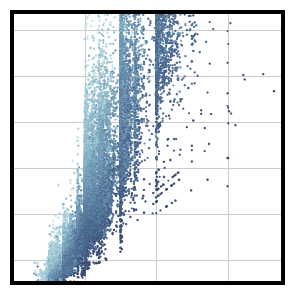
sns.scatterplot()Scatterplot with multiple semantics
One point per observation; map more variables to visual semantics.
sns.scatterplot(x="carat", y="price",
hue="clarity", size="depth",
palette="ch:r=-.2,d=.3_r",
hue_order=clarity_ranking,
sizes=(1, 8), linewidth=0,
data=diamonds, ax=ax)sns.lineplot()lineplot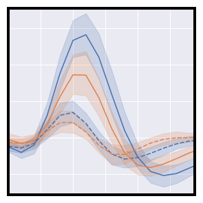
sns.lineplot()Timeseries plot with error bands
Connect ordered observations; use grouping and error bands to show continuity.
sns.lineplot(x="timepoint", y="signal",
hue="region", style="event",
data=fmri)sns.relplot()relplot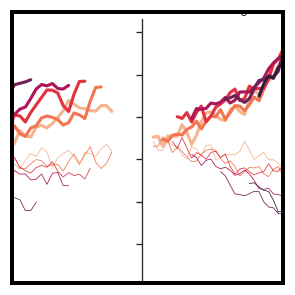
sns.relplot()Line plots on multiple facets
Figure-level relational interface: switch between relational kinds and facet them.
sns.relplot(
data=dots,
x="time", y="firing_rate",
hue="coherence", size="choice", col="align",
kind="line", size_order=["T1", "T2"], palette=palette,
height=5, aspect=.75, facet_kws=dict(sharex=False),
)sns.relplot()relplot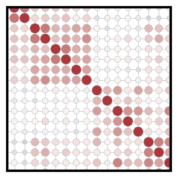
sns.relplot()Scatterplot heatmap
Figure-level relational interface: switch between relational kinds and facet them.
g = sns.relplot(
data=corr_mat,
x="level_0", y="level_1", hue="correlation", size="correlation",
palette="vlag", hue_norm=(-1, 1), edgecolor=".7",
height=10, sizes=(50, 250), size_norm=(-.2, .8),
)sns.scatterplot()scatterplot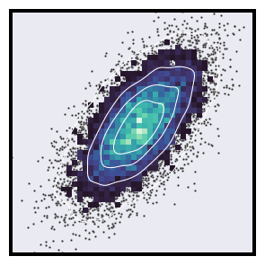
sns.scatterplot()Bivariate plot with multiple elements
One point per observation; map more variables to visual semantics.
sns.scatterplot(x=x, y=y, s=5, color=".15")sns.relplot()relplot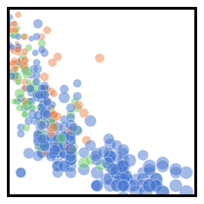
sns.relplot()Scatterplot with varying point sizes and hues
Figure-level relational interface: switch between relational kinds and facet them.
sns.relplot(x="horsepower", y="mpg", hue="origin", size="weight",
sizes=(40, 400), alpha=.5, palette="muted",
height=6, data=mpg)sns.relplot()relplot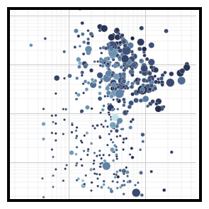
sns.relplot()Scatterplot with continuous hues and sizes
Figure-level relational interface: switch between relational kinds and facet them.
g = sns.relplot(
data=planets,
x="distance", y="orbital_period",
hue="year", size="mass",
palette=cmap, sizes=(10, 200),
)sns.relplot()relplot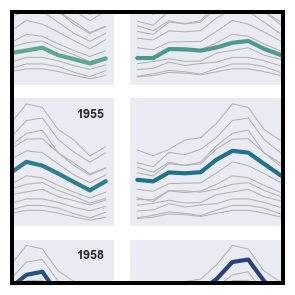
sns.relplot()Small multiple time series
Figure-level relational interface: switch between relational kinds and facet them.
g = sns.relplot(
data=flights,
x="month", y="passengers", col="year", hue="year",
kind="line", palette="crest", linewidth=4, zorder=5,
col_wrap=3, height=2, aspect=1.5, legend=False,
)sns.lineplot()lineplot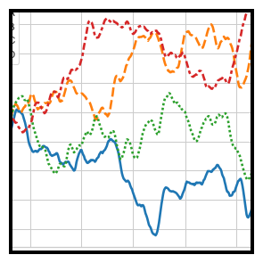
sns.lineplot()Lineplot from a wide-form dataset
Connect ordered observations; use grouping and error bands to show continuity.
sns.lineplot(data=data, palette="tab10", linewidth=2.5)Distributions
Use these when the question concerns spread, density, frequency, cumulative position or shape.
These displays are useful when one measured variable is the subject and you want to see its spread, concentration, skew, unusual values or density—for example, delivery times. They are less useful when the main question is how one variable changes with another.
kind=displot can switch among histogram, KDE, ECDF and rug views.bins=Change the number or boundaries of histogram intervals.stat=Choose counts, probability, density or percent-style summaries.multiple=Layer, stack, fill or dodge distributions for comparison.element=Use bars, steps or polygons for histogram construction.common_norm=Decide whether group densities share a normalisation.sns.displot()displot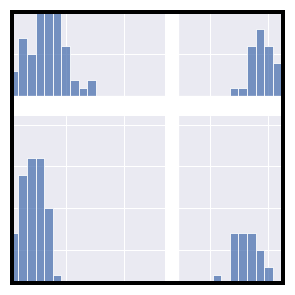
sns.displot()Facetting histograms by subsets of data
Figure-level distribution interface: switch among histogram, KDE, ECDF and rug views.
sns.displot(
df, x="flipper_length_mm", col="species", row="sex",
binwidth=3, height=3, facet_kws=dict(margin_titles=True),
)sns.histplot()histplot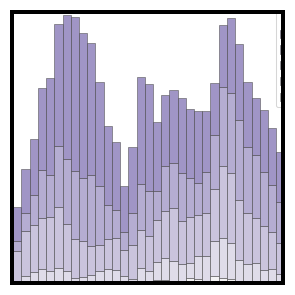
sns.histplot()Stacked histogram on a log scale
Count or normalise observations inside bins; compare groups with hue and elements.
sns.histplot(
diamonds,
x="price", hue="cut",
multiple="stack",
palette="light:m_r",
edgecolor=".3",
linewidth=.5,
log_scale=True,
)sns.boxenplot()boxenplot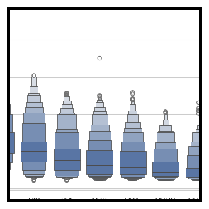
sns.boxenplot()Plotting large distributions
Show distribution summaries for larger datasets with more quantile detail.
sns.boxenplot(
diamonds, x="clarity", y="carat",
color="b", order=clarity_ranking, width_method="linear",
)sns.kdeplot()kdeplot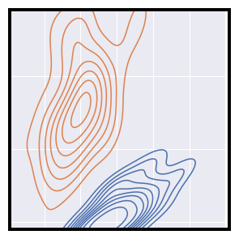
sns.kdeplot()Multiple bivariate KDE plots
Estimate a smooth density and compare distributions through hue or levels.
sns.kdeplot(
data=iris.query("species != 'versicolor'"),
x="sepal_width",
y="sepal_length",
hue="species",
thresh=.1,
)sns.displot()displot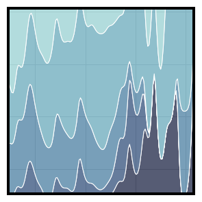
sns.displot()Conditional kernel density estimate
Figure-level distribution interface: switch among histogram, KDE, ECDF and rug views.
sns.displot(
data=diamonds,
x="carat", hue="cut",
kind="kde", height=6,
multiple="fill", clip=(0, None),
palette="ch:rot=-.25,hue=1,light=.75",
)sns.displot()displot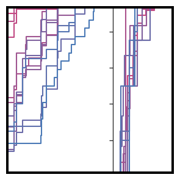
sns.displot()Facetted ECDF plots
Figure-level distribution interface: switch among histogram, KDE, ECDF and rug views.
sns.displot(
mpg,
x="displacement", col="origin", hue="model_year",
kind="ecdf", aspect=.75, linewidth=2, palette=cmap,
)sns.kdeplot()kdeplot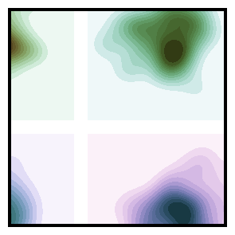
sns.kdeplot()Different cubehelix palettes
Estimate a smooth density and compare distributions through hue or levels.
sns.kdeplot(
x=x, y=y,
cmap=cmap, fill=True,
clip=(-5, 5), cut=10,
thresh=0, levels=15,
ax=ax,
)sns.displot()displot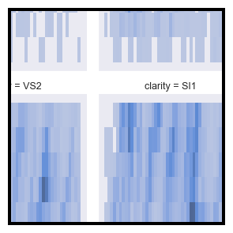
sns.displot()Trivariate histogram with two categorical variables
Figure-level distribution interface: switch among histogram, KDE, ECDF and rug views.
sns.displot(
data=diamonds, x="price", y="color", col="clarity",
log_scale=(True, False), col_wrap=4, height=4, aspect=.7,
)Categorical comparisons
Use these when observations belong to named groups and the comparison is within or between categories.
These displays are useful when observations belong to named groups and you want to compare a measured outcome across those groups—for example, glove price by material or delivery time by weekday. They are less useful when the important structure is a relationship between two continuous measurements.
kind=catplot can switch among strip, swarm, box, violin, boxen, point, bar and count.order=Control the order in which categories appear.hue=Add a second categorical grouping through colour.dodge=Separate or overlap hue groups within each category.inner=Choose the summary drawn inside a violin plot.native_scale=Keep numeric or datetime category positions on their original scale.sns.catplot()catplot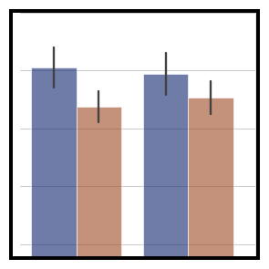
sns.catplot()Grouped barplots
Figure-level categorical interface with switchable plot kinds and facets.
g = sns.catplot(
data=penguins, kind="bar",
x="species", y="body_mass_g", hue="sex",
errorbar="sd", palette="dark", alpha=.6, height=6
)sns.boxplot()boxplot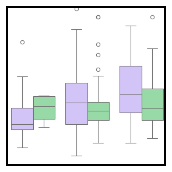
sns.boxplot()Grouped boxplots
Compare categorical distributions through quartiles and potential outliers.
sns.boxplot(x="day", y="total_bill",
hue="smoker", palette=["m", "g"],
data=tips)sns.violinplot()violinplot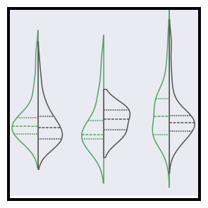
sns.violinplot()Grouped violinplots with split violins
Combine a distribution shape with categorical comparison and inner summaries.
sns.violinplot(data=tips, x="day", y="total_bill", hue="smoker",
split=True, inner="quart", fill=False,
palette={"Yes": "g", "No": ".35"})sns.boxplot()boxplot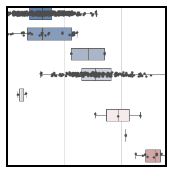
sns.boxplot()Horizontal boxplot with observations
Compare categorical distributions through quartiles and potential outliers.
sns.boxplot(
planets, x="distance", y="method", hue="method",
whis=[0, 100], width=.6, palette="vlag"
)sns.stripplot()stripplot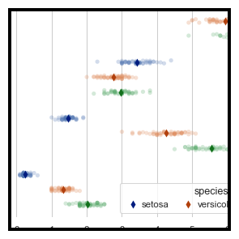
sns.stripplot()Conditional means with observations
Show individual observations across categories, with jitter for overlap.
sns.stripplot(
data=iris, x="value", y="measurement", hue="species",
dodge=True, alpha=.25, zorder=1, legend=False,
)sns.barplot()barplot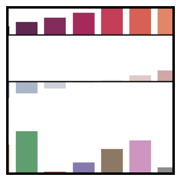
sns.barplot()Color palette choices
Estimate a summary for each category and show uncertainty with error bars.
sns.barplot(x=x, y=y1, hue=x, palette="rocket", ax=ax1)sns.barplot()barplot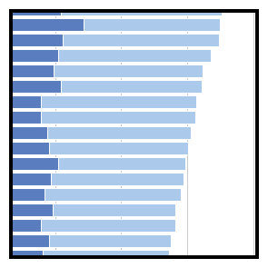
sns.barplot()Horizontal bar plots
Estimate a summary for each category and show uncertainty with error bars.
sns.barplot(x="total", y="abbrev", data=crashes,
label="Total", color="b")sns.catplot()catplot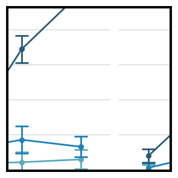
sns.catplot()Plotting a three-way ANOVA
Figure-level categorical interface with switchable plot kinds and facets.
g = sns.catplot(
data=exercise, x="time", y="pulse", hue="kind", col="diet",
capsize=.2, palette="YlGnBu_d", errorbar="se",
kind="point", height=6, aspect=.75,
)sns.swarmplot()swarmplot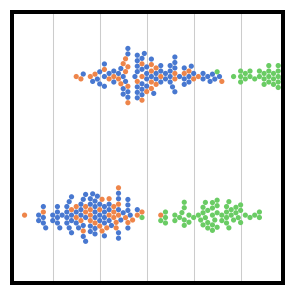
sns.swarmplot()Scatterplot with categorical variables
Show individual observations while arranging points to reduce overlap.
ax = sns.swarmplot(data=df, x="body_mass_g", y="sex", hue="species")sns.violinplot()violinplot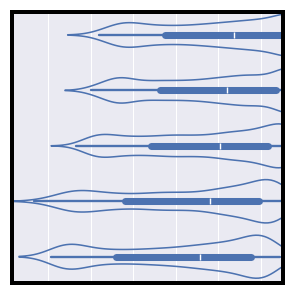
sns.violinplot()Horizontal, unfilled violinplots
Combine a distribution shape with categorical comparison and inner summaries.
sns.violinplot(seaice, x="Extent", y="Decade", orient="y", fill=False)sns.catplot()catplot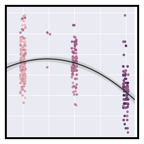
sns.catplot()Regression fit over a strip plot
Figure-level categorical interface with switchable plot kinds and facets.
sns.catplot(
data=mpg, x="cylinders", y="acceleration", hue="weight",
native_scale=True, zorder=1
)sns.violinplot()violinplot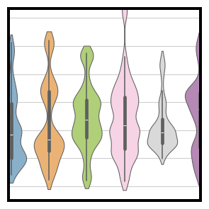
sns.violinplot()Violinplot from a wide-form dataset
Combine a distribution shape with categorical comparison and inner summaries.
sns.violinplot(data=corr_df, bw_adjust=.5, cut=1, linewidth=1, palette="Set3")Regression
Use these when a fitted relationship or its residual pattern is part of the question.
These displays are useful when a fitted relationship can summarise the pattern between variables. A residual is the leftover difference between an observed value and the model’s estimate, so residual views help reveal what the fitted line has not explained. They are less useful as evidence of causation, or when there is no sensible relationship to model.
order=Fit a polynomial regression of the chosen order.hue= / col=Fit and compare models across groups or facets.logistic=Fit a logistic rather than ordinary linear model.robust=Use a robust fit when outliers may dominate the ordinary fit.lowess=Use a locally weighted smooth rather than a parametric model.errorbar=Control the uncertainty band around an estimate or fit.sns.lmplot()lmplot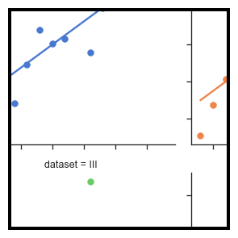
sns.lmplot()Anscombe’s quartet
Fit a regression model while retaining observations and faceting options.
sns.lmplot(
data=df, x="x", y="y", col="dataset", hue="dataset",
col_wrap=2, palette="muted", ci=None,
height=4, scatter_kws={"s": 50, "alpha": 1}
)sns.lmplot()lmplot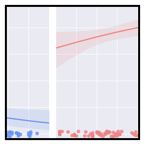
sns.lmplot()Faceted logistic regression
Fit a regression model while retaining observations and faceting options.
g = sns.lmplot(x="age", y="survived", col="sex", hue="sex", data=df,
palette=pal, y_jitter=.02, logistic=True, truncate=False)sns.lmplot()lmplot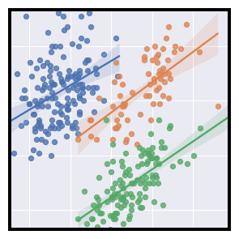
sns.lmplot()Multiple linear regression
Fit a regression model while retaining observations and faceting options.
g = sns.lmplot(
data=penguins,
x="bill_length_mm", y="bill_depth_mm", hue="species",
height=5
)sns.residplot()residplot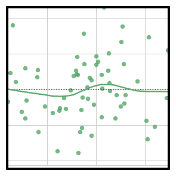
sns.residplot()Plotting model residuals
Inspect the pattern left around a fitted relationship.
sns.residplot(x=x, y=y, lowess=True, color="g")Matrices
Use these when values form a rectangular matrix or pairwise structure is best read through colour.
These displays are useful when values already form a meaningful grid, such as correlations between many numeric variables, and colour or clustering can reveal structure. They are less useful for following individual observations row by row.
cmap=Choose the colour mapping used to encode matrix values.center=Set the meaningful midpoint for a diverging scale.annot=Write values into heatmap cells when numbers matter.mask=Hide cells that should not be displayed.row_colors= / col_colors=Add side colour annotations for groups or metadata.standard_scale=Scale rows or columns before comparison or clustering.sns.heatmap()heatmap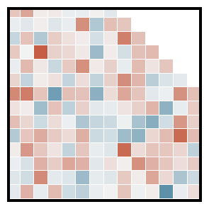
sns.heatmap()Plotting a diagonal correlation matrix
Encode a rectangular matrix as colour, with annotation and masking controls.
sns.heatmap(corr, mask=mask, cmap=cmap, vmax=.3, center=0,
square=True, linewidths=.5, cbar_kws={"shrink": .5})sns.heatmap()heatmap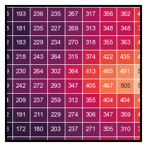
sns.heatmap()Annotated heatmaps
Encode a rectangular matrix as colour, with annotation and masking controls.
sns.heatmap(flights, annot=True, fmt="d", linewidths=.5, ax=ax)sns.clustermap()clustermap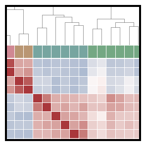
sns.clustermap()Discovering structure in heatmap data
Combine a heatmap with hierarchical clustering and colour annotations.
g = sns.clustermap(df.corr(), center=0, cmap="vlag",
row_colors=network_colors, col_colors=network_colors,
dendrogram_ratio=(.1, .2),
cbar_pos=(.02, .32, .03, .2),
linewidths=.75, figsize=(12, 13))Grids and composition
Use these when related subsets, pairs or marginal views need to be arranged together.
These displays are useful when the same question needs to be repeated across groups, variables or marginal views, making small multiples or pairwise comparisons easier to scan. They are less useful when many panels would make the overall pattern harder to read.
row= / col=Create small multiples from subsets of the data.map() / map_dataframe()Place an axes-level function into each facet.kind=Convenience functions switch their inner bivariate view.diag_kind= / corner=Change diagonal plots or reduce a pairwise matrix.seaborn.objectsUse a declarative Plot specification.Mark + Stat + MoveCompose visible marks, transformations and adjustments.sns.jointplot()jointplot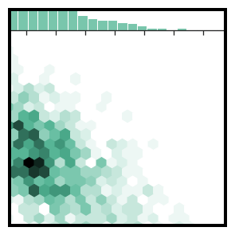
sns.jointplot()Hexbin plot with marginal distributions
Convenient joint-and-marginal view with a switchable bivariate kind.
sns.jointplot(x=x, y=y, kind="hex", color="#4CB391")sns.JointGrid()JointGrid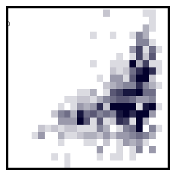
sns.JointGrid()Joint and marginal histograms
Combine a bivariate view with marginal views on the same figure.
g = sns.JointGrid(data=planets, x="year", y="distance", marginal_ticks=True)sns.jointplot()jointplot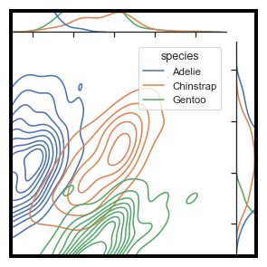
sns.jointplot()Joint kernel density estimate
Convenient joint-and-marginal view with a switchable bivariate kind.
g = sns.jointplot(
data=penguins,
x="bill_length_mm", y="bill_depth_mm", hue="species",
kind="kde",
)sns.FacetGrid()FacetGrid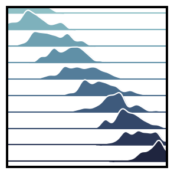
sns.FacetGrid()Overlapping densities (‘ridge plot’)
Build a grid of subsets and map a plotting function into each facet.
g = sns.FacetGrid(df, row="g", hue="g", aspect=15, height=.5, palette=pal)sns.FacetGrid()FacetGrid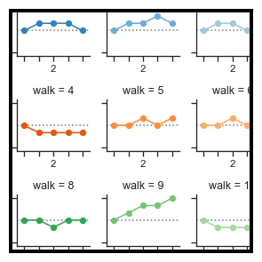
sns.FacetGrid()Plotting on a large number of facets
Build a grid of subsets and map a plotting function into each facet.
grid = sns.FacetGrid(df, col="walk", hue="walk", palette="tab20c",
col_wrap=4, height=1.5)sns.JointGrid()JointGrid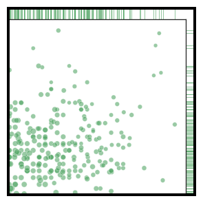
sns.JointGrid()Scatterplot with marginal ticks
Combine a bivariate view with marginal views on the same figure.
g = sns.JointGrid(data=mpg, x="mpg", y="acceleration", space=0, ratio=17)sns.PairGrid()PairGrid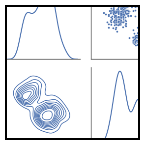
sns.PairGrid()Paired density and scatterplot matrix
Compose different plots on diagonal and off-diagonal pairwise views.
g = sns.PairGrid(df, diag_sharey=False)sns.PairGrid()PairGrid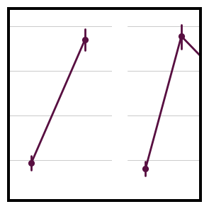
sns.PairGrid()Paired categorical plots
Compose different plots on diagonal and off-diagonal pairwise views.
g = sns.PairGrid(titanic, y_vars="survived",
x_vars=["class", "sex", "who", "alone"],
height=5, aspect=.5)sns.PairGrid()PairGrid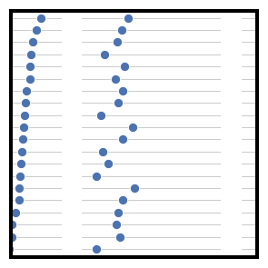
sns.PairGrid()Dot plot with several variables
Compose different plots on diagonal and off-diagonal pairwise views.
g = sns.PairGrid(crashes.sort_values("total", ascending=False),
x_vars=crashes.columns[:-3], y_vars=["abbrev"],
height=10, aspect=.25)sns.FacetGrid()FacetGrid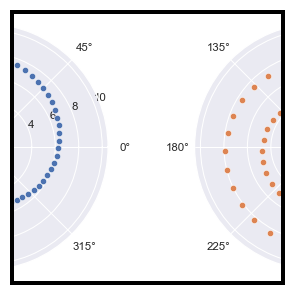
sns.FacetGrid()FacetGrid with custom projection
Build a grid of subsets and map a plotting function into each facet.
g = sns.FacetGrid(df, col="speed", hue="speed",
subplot_kws=dict(projection='polar'), height=4.5,
sharex=False, sharey=False, despine=False)sns.jointplot()jointplot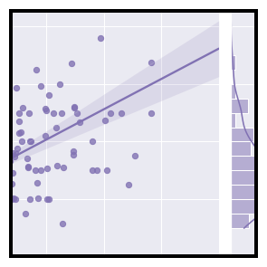
sns.jointplot()Linear regression with marginal distributions
Convenient joint-and-marginal view with a switchable bivariate kind.
g = sns.jointplot(x="total_bill", y="tip", data=tips,
kind="reg", truncate=False,
xlim=(0, 60), ylim=(0, 12),
color="m", height=7)sns.pairplot()pairplot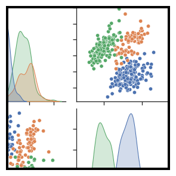
sns.pairplot()Scatterplot Matrix
Convenient pairwise relationship matrix using common Seaborn defaults.
sns.pairplot(df, hue="species")sns.JointGrid()JointGrid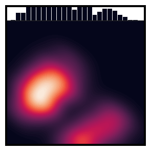
sns.JointGrid()Smooth kernel density with marginal histograms
Combine a bivariate view with marginal views on the same figure.
g = sns.JointGrid(data=df, x="body_mass_g", y="bill_depth_mm", space=0)